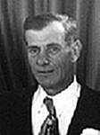

fiche familiale
*******************************************************************************
Joseph Prince
décède à l'âge de 39 ans
Naissance: 20 fév 1856 à St-Grégoire, cté Nicolet
Décès: 2 mai 1895 à St-Grégoire, cté Nicolet
Père: Joseph Prince
Mère: Julie Dureau
Mariage: 30 jan 1883 à Ste-Angèle-de-Laval, cté Nicolet
Épouse: Célina Paterson
décède à l'âge de 75 ans
Naissance: en mai 1863
Décès: 20 jan 1939 à Fugèreville, cté Témiscamingue
Père: Wilfrid Paterson
Mère: Marie Désilets
*******************************************************************************
Enfant 1 Almaïde Prince
décède à l'âge de 67 ans
Naissance: 30 jul 1884 à St-Grégoire, cté Nicolet
Décès: 15 jan 1952 à Laverlochère, cté Témiscamingue
Mariage le 30 mai 1905 à Bécancour, cté Nicolet
Conjoint: Luc Dubois n. en 1876 d. 1 avril 1929
-------------------------------------------------------------------------------
Enfant 2 Joseph-William Prince
décède à l'âge de 31 ans
Naissance: 23 jun 1886 à St-Grégoire, cté Nicolet
Décès: 19 déc 1917 à Fugèreville, cté Témiscamingue
Mariage le 10 jul 1911 à St-Célestin, cté Nicolet
Conjointe: Marianne-Aldéa Arsenault n. en 1888 d. 23 fév 1918
-------------------------------------------------------------------------------
Enfant 3 Antonio Prince
décède à l'âge de 29 ans
Naissance: 29 sep 1888 à St-Grégoire, cté Nicolet
Décès: 27 août 1918 à Latulipe, cté Témiscamingue
-------------------------------------------------------------------------------
Enfant 4 Herminoda Prince
Naissance: 26 jun 1890 à St-Grégoire, cté Nicolet
Mariage le 13 oct 1909 à Bécancour, cté Nicolet
Conjoint: Joseph Tremblay
-------------------------------------------------------------------------------
|   |
Enfant 5 Charles Prince décède à l'âge de 70 ans. Naissance le 15 août 1892 à Bécancour, cté Nicolet Décès le 8 jul 1963 à Rouyn-Noranda (ses ancêtres) Mariage le 15 août 1923 à St-Isidore de Laverlochère Conjointe: Marie-Rose Rivet n. 30 jul 1903 d. 12 mars 2000 (sa famille) |
Enfant 6 Lorette Prince
décède à l'âge de 72 ans
Naissance: 24 juin 1895 à St-Grégoire, cté Nicolet
Décès: 9 nov 1967 à Rouyn-Noranda, cté Témiscamingue
Mariage le 24 jan 1921 à St-Isidore de Laverlochère
Conjoint: René Boucher n. en 1891 d. 6 jan 1937
-------------------------------------------------------------------------------
| Début de la page | Page précédente | Page des ancêtres | Page d'accueil |